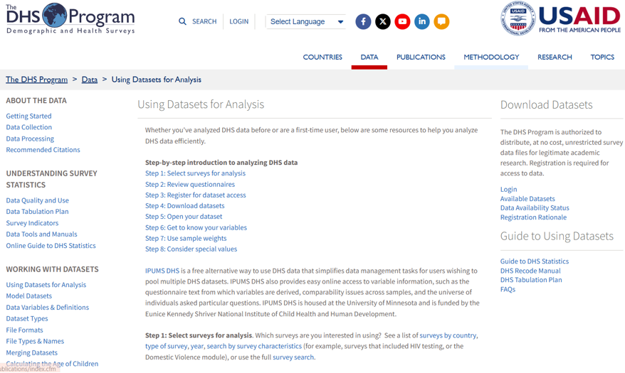
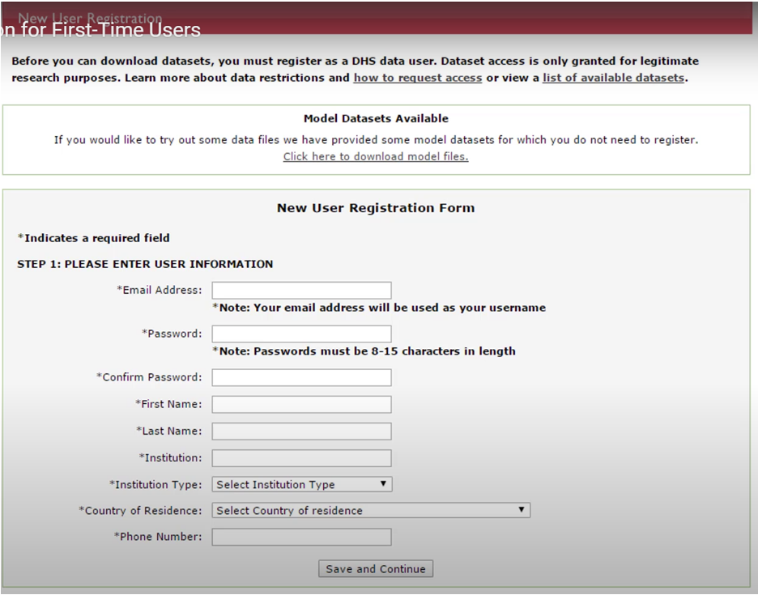
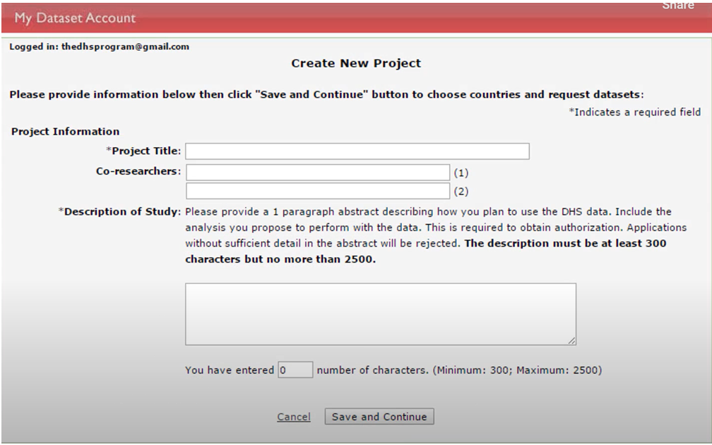
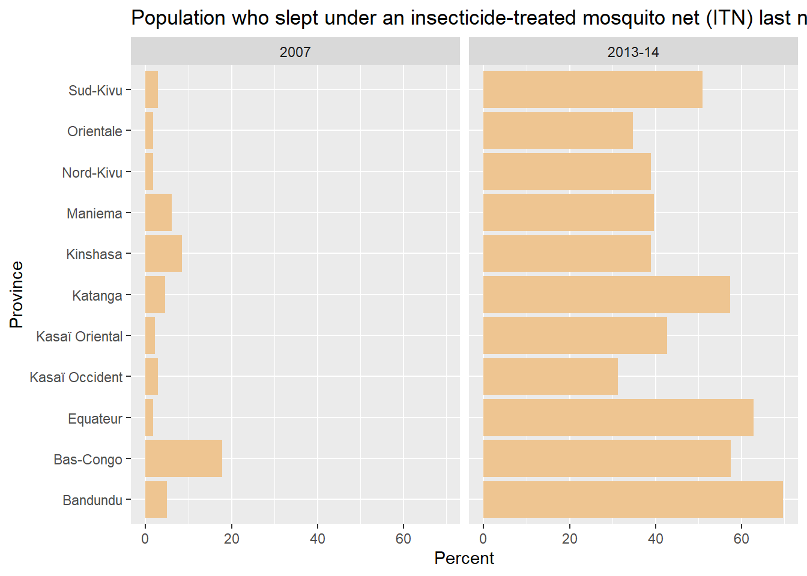
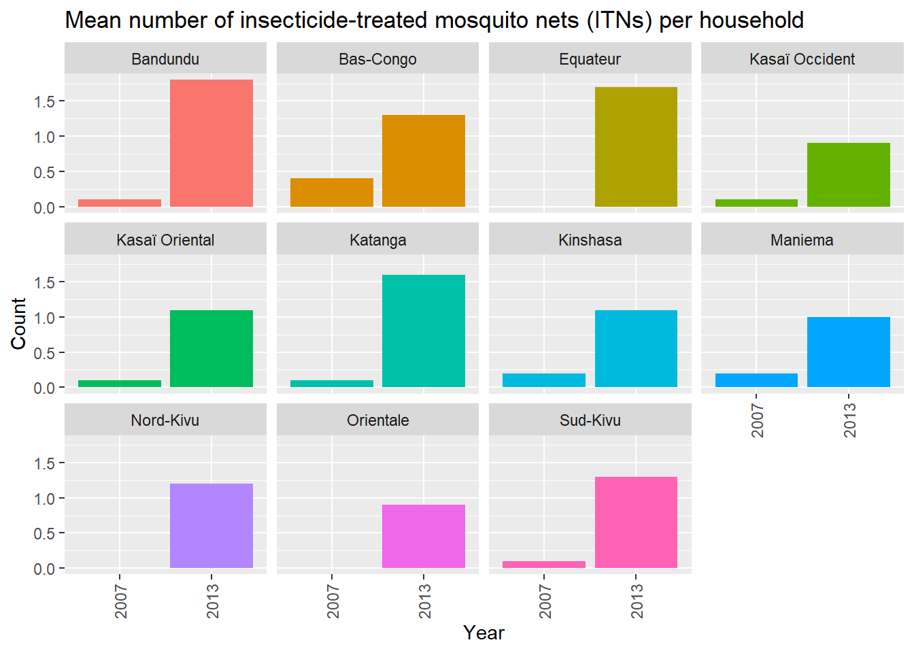
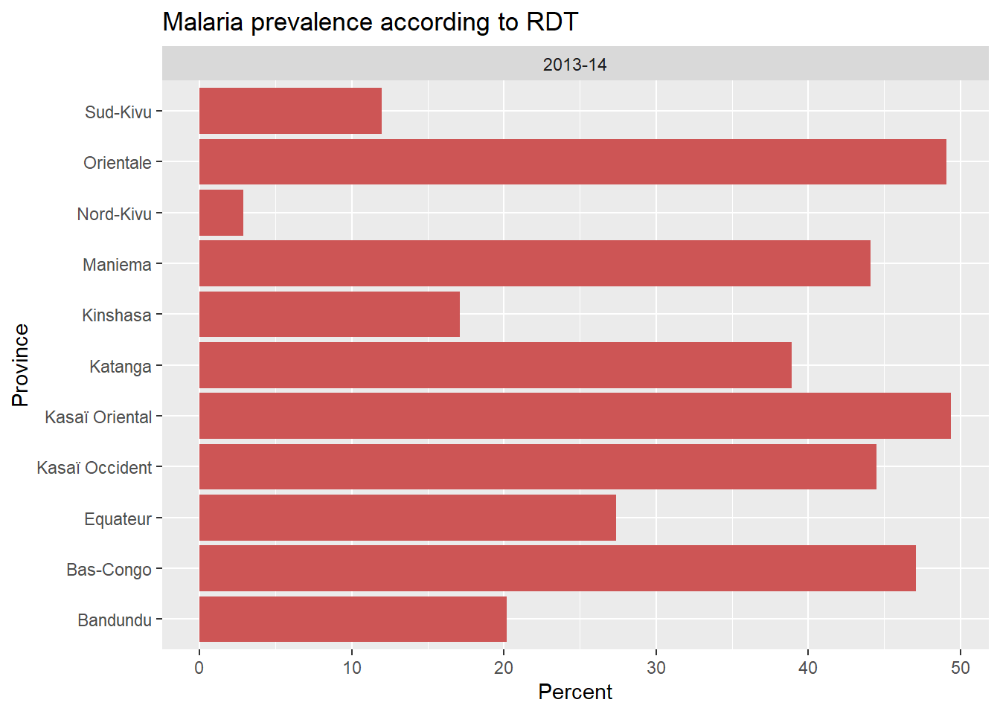
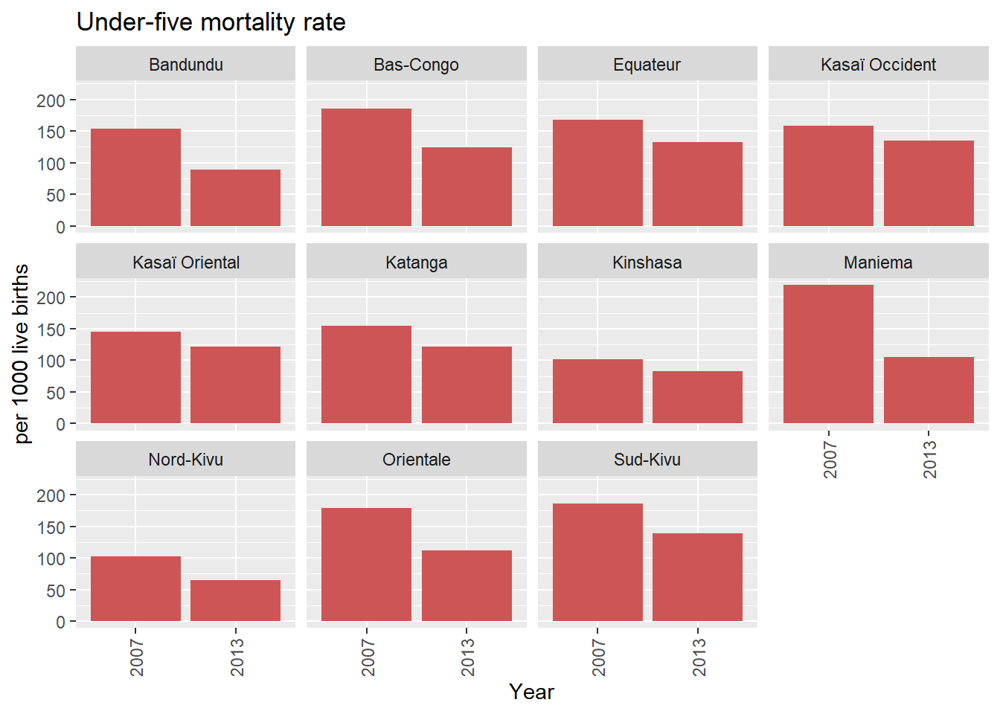
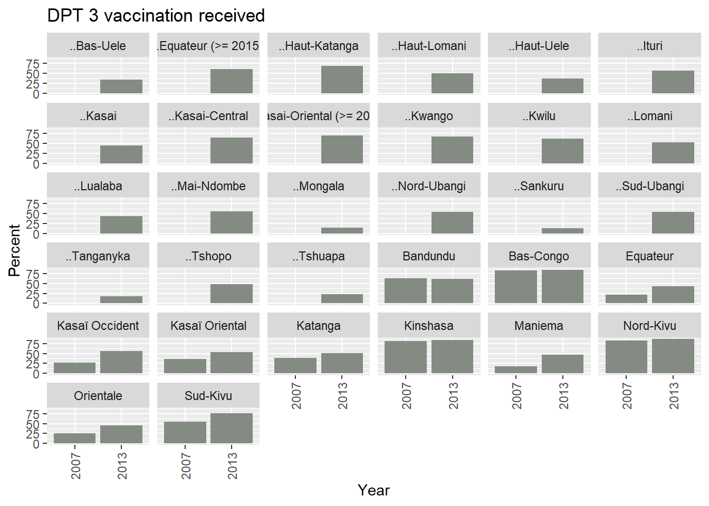

── Attaching core tidyverse packages ──────────────────────── tidyverse 2.0.0 ──
✔ dplyr 1.1.4 ✔ readr 2.1.5
✔ forcats 1.0.0 ✔ stringr 1.5.1
✔ ggplot2 3.5.2 ✔ tibble 3.3.0
✔ lubridate 1.9.4 ✔ tidyr 1.3.1
✔ purrr 1.1.0
── Conflicts ────────────────────────────────────────── tidyverse_conflicts() ──
✖ dplyr::filter() masks stats::filter()
✖ dplyr::lag() masks stats::lag()
ℹ Use the conflicted package (<http://conflicted.r-lib.org/>) to force all conflicts to become errors
Attaching package: 'janitor'
The following objects are masked from 'package:stats':
chisq.test, fisher.test
Thank you for using rdhs. If you are using rdhs regularly
or for automated tasks, please register for your own API key by
emailing api@dhsprogram.com.
More info at <https://api.dhsprogram.com/#/introdevelop.html>2 Demographic and Health Survey
MACEPA Data Fellowship - Training Materials
The Demographic and Health Surveys (DHS) program collects data on health-related indicators at regular intervals (averaging five years) in many malaria-endemic countries. The DHS collects rare survey data on malaria indicators, including ITN ownership, ITN usage, indoor residual spraying coverage, treatment coverage, treatment-seeking rates, vaccination coverage in the expanded program on immunization (EPI), antenatal care coverage, among others.
This module will cover downloading and working with DHS data available under the rdhs package in R.
3 Registering with DHS
All data at the DHS are freely available. However, before you can download data, you must register as a DHS data user. You can register at this [other-links].

Figure 1: DHS users need to register at this website
In the Step-by-step introduction to analyzing data section, you can select Step 3: Register for dataset access to get more information on how to register.

Figure 2: Step 1 of the user registration process
You will need to provide your email and a password which you will use to access DHS data. Your email address also serves as your username. You will also need to provide information on the project you will use the data for. This includes the title, co-researchers, and a description of the study. For our demonstration, we will provide the following information:
Project Title: Malaria control data analysis support
Co-researcher: Name of yout collaborator
Description of the study: The Malaria control data analytics support project will work with malaria control programs in Africa to strengthen their data-driven decision-making process. Particularly, we aim to answer questions related to alignment of program-based data with that from survey data, such as the DHS. We will use visualization and statistical tools to answer these questions.

Figure 3: Step 2 of the user registration process
The country/ countries you will download data for may or may not need to be identified, depending on the project. In this exercise, we will select the Democratic Republic of Congo (DRC) as the country and Sub-Saharan Africa as the region of interest. You can choose as many countries as you want, but make sure the list of countries you select corresponds to the overall objective of the project stated in the Description of Study section.
Once approved, which usually takes 24-48 hours, you will be granted access to the data
4 Exploring the DHS repository
Once you have a DHS account, you can access DHS data using the R package rdhs. In this section, we will describe the organization of DHS data in the online DHS archive, accessible through the rdhs package. We will then demonstrate downloading DHS data for DRC.
We begin by installing the rdhs package in R and loading the necessary packages.
The rdhs package has functions that facilitate exploring the DHS repository.
4.1 Survey characteristics
To explore what survey types reside in the DHS repository, we can use the dhs_survey_characteristics() function. Not all DHS surveys are related to malaria, and only a few are specific to malaria. You can find out by filtering those that have “malaria” in their names. This function provides high-level information on the types of data gathered by the DHS.
# capture all data on survey characteristics
sc<- dhs_survey_characteristics()Your datasets and API calls will be cached here:
-> C:\Users\asiraj\AppData\Local/asiraj/rdhs/Cache
Your datasets will be downloaded using the following config:List of 11
$ email : NULL
$ project : NULL
$ password : NULL
$ cache_path : chr "C:\\Users\\asiraj\\AppData\\Local/asiraj/rdhs/Cache"
$ config_path : chr "C:\\Users\\asiraj\\AppData\\Local/asiraj/rdhs/Cache/rdhs.json"
$ global : logi TRUE
$ verbose_download: logi FALSE
$ verbose_setup : logi TRUE
$ timeout : int 30
$ data_frame : chr "as.data.frame"
$ project_choice : NULL# filter those that have 'malaria' in their names
mal_sc<- dhs_survey_characteristics() |>
dplyr::filter(grepl("Malaria", SurveyCharacteristicName))
head(mal_sc) SurveyCharacteristicID SurveyCharacteristicName
1 96 Malaria DBS
2 90 Malaria microscopy
3 124 Malaria microscopy
4 119 Malaria microscopy - thin smear
5 57 Malaria questions
6 89 Malaria RDT4.2 Surveys
We can go further and explore what country-specific surveys are included in the repository by using the function dhs_surveys(). The DHS program conducts malaria indicator surveys (MISs) in addition to the regular DHS. MIS is separate from DHS by its SurveyType attribute in the dhs_surveys data set.
# capture all surveya
srv<- dhs_surveys ()
# summarize by survey type
table(srv$SurveyType)
AIS DHS MIS
11 313 39 # capture MIS surveys by the year of release and country name
srv_mis<- dhs_surveys(returnFields =
c("ReleaseDate", "CountryName","SurveyType")) |>
filter(SurveyType == "MIS")
head(srv_mis) ReleaseDate SurveyType CountryName
1 2008-02-27 MIS Angola
2 2012-01-24 MIS Angola
3 2015-10-16 MIS Burkina Faso
4 2019-07-08 MIS Burkina Faso
5 2013-09-03 MIS Burundi
6 2023-10-27 MIS Cameroon# display all DHS and MIS surveys released in the year 2018
dhs_surveys(returnFields =
c("ReleaseDate", "CountryName","SurveyType")) |>
filter(SurveyType %in% c("MIS", "DHS")) |>
filter(year(ReleaseDate)==2018) ReleaseDate SurveyType CountryName
1 2018-04-05 DHS Burundi
2 2018-08-21 DHS Haiti
3 2018-01-11 DHS India
4 2018-04-25 MIS Malawi
5 2018-10-03 DHS Philippines
6 2018-09-07 MIS Rwanda
7 2018-09-28 DHS Senegal
8 2018-12-14 DHS Tajikistan
9 2018-10-22 MIS Tanzania
10 2018-04-10 DHS Timor-Leste
11 2018-08-08 MIS Togo
12 2018-07-30 DHS Turkey
13 2018-07-30 DHS Turkey
14 2018-03-12 DHS Uganda4.3 Countries
We can explore which countries have data in the DHS repository by using the dhs_countries() function. Notice what country code each country is assigned. We will use these two-letter country codes to download data in our examples.
# capture all countries
countries<- dhs_countries()
# capture country codes and names
country_ids<- dhs_countries(returnFields=c("DHS_countryCode", "CountryName"))
head(country_ids) DHS_CountryCode CountryName
1 AF Afghanistan
2 AL Albania
3 AO Angola
4 AM Armenia
5 AZ Azerbaijan
6 BD BangladeshNotice that the country codes for CAR, DRC, Ethiopia, Gambi, Nigeria, Senegal, and Zambia are “CF”, “CD”, “ET”, “GM”, “NG”, “SN”, and “ZM”, respectively.
4.4 Indicators
DHS (and MIS) include thousands of indicators whose data you can download These indicators are described in the data dictionary which can be explored using the dhs_indicators() function.
#capture the list of indicators
ind<- dhs_indicators()
names(ind) [1] "Definition" "NumberScale"
[3] "IndicatorType" "MeasurementType"
[5] "IsQuickStat" "ShortName"
[7] "IndicatorId" "Level1"
[9] "IndicatorTotalId" "Level2"
[11] "Level3" "SDRID"
[13] "IndicatorOldId" "TagIds"
[15] "DenominatorWeightedId" "Label"
[17] "IndicatorOrder" "Denominator"
[19] "QuickStatOrder" "IndicatorSpecial1Id"
[21] "DenominatorUnweightedId" "IndicatorSpecial2Id" #capture the list of indicators by their label and ID
indicators <- dhs_indicators(returnFields=c("IndicatorId", "Label"))
head(indicators) IndicatorId Label
1 FE_FRTR_W_A10 Age specific fertility rate: 10-14
2 FE_FRTR_W_A15 Age specific fertility rate: 15-19
3 FE_FRTR_W_A20 Age specific fertility rate: 20-24
4 FE_FRTR_W_A25 Age specific fertility rate: 25-29
5 FE_FRTR_W_A30 Age specific fertility rate: 30-34
6 FE_FRTR_W_A35 Age specific fertility rate: 35-394.5 Datasets
Downloading DHS data involves data retrieval from hundreds of files. The repository is organized into thousands of datasets, each identified by its file name. The datasets are stored in different formats, including SPCC, flat ASCII data, Stata data, etc. The fileType indicates the the datasets organization including births recode, household members recode, household recode, provider, verbal autopsy, etc. rdhs uses acronyms to represent these file types. For instance ‘PR’ is used to represent person (household member) recode.
# capture all datasets
dset<- dhs_datasets()
# capture all datasets by country name, year, file format, and file type.
datasets<- dhs_datasets(returnFields=c("SurveyType,", "CountryName", "SurveyYear", "FileFormat", "FileType"))
# capture all datasets related to household member recode
person_datasets<- dhs_datasets(fileType ="PR")5 Downloading DHS data
While downloading DHS data involves retrieval of data from corresponding datasets, in rdhs we have the option of downloading data either specified by the datasets, or a compilation of all data for a specific country.
At this stage, we need to sign into the DHS repository using the DHS username and password we have created. We will use the project we had registered in the registration section. The process to sign in involves using the function set_rdhs_config().
$email
NULL
$project
NULL
$password
NULL
$cache_path
[1] "C:\\Users\\asiraj\\AppData\\Local/asiraj/rdhs/Cache"
$config_path
[1] "C:\\Users\\asiraj\\AppData\\Local/asiraj/rdhs/Cache/rdhs.json"
$global
[1] TRUE
$verbose_download
[1] FALSE
$verbose_setup
[1] TRUE
$timeout
[1] 30
$data_frame
function (x)
x
<bytecode: 0x0000025e3c938650>
<environment: namespace:base>
$project_choice
NULL
$data_frame_nice
[1] "as.data.frame"
attr(,"class")
[1] "rdhs_config"#this configuration statement enables you to login to your DHS account
set_rdhs_config(email = [“your email”]
project = “Malaria Data Fellowship Program”,
config_path = “rdhs.json”,
global = FALSE)
To comply with CRAN, this function will also ask you for your permission to write to files outside your temporary directory, and you must type out the filename for the config_path - “rdhs.json”. The path to your config is saved between sessions so you only have to set this once. With your credentials set, all API requests will be cached within the cache_path directory provided so that these can be returned when working remotely or with a poor internet connection. You can also check your configuration by using the get_rdhs_config().
5.1 Downloading a specific dataset
Let us assume we want to download RDT prevalence from all surveys conducted since 2005 in DRC. This can be done by selecting the surveys conducted since 2025 in DRC, and specifying the file format and file type.
Malaria RDT is organized into the survey characteristics named Malaria RDT (surveyCharacteristicsId = 89)
Data on RDT prevalence is located in the dataset organized into household members thus will be in household members recode data type (PR).
The file type will be flat ASCII (FL)
# filter the surveys for the DRC (country code CD) and malaria RDT (id=89)
# since 2005
this_survey <- dhs_surveys(
countryIds = c("CD"),
surveyCharacteristicIds = 89,
surveyYearStart = 2005)
# zoom into the datasets with data on household member recode
this_dataset <- dhs_datasets(
surveyIds = this_survey,
fileFormat = "FL",
fileType = "PR")
# dowload the data from DHS repository
# at this stage the system will verify our login information
# commented out because of a bug at the DHS website
# downloads <- get_datasets(this_dataset$FileName)5.2 Downloading all data for a country
Another approach to downloading DHS data is using the rdhs repository in R. This repository has archived historical DHS surveys for all countries , which can access in R. The following script access all DHS data for DRC conducted since 2005 broken down by provinces.
# capture all indicators in DHS
indicators <- dhs_indicators(returnFields=c("IndicatorId", "Label"))
# capture data on all indicators for the DRC since 2005
# broken down by subnationally (province level)
cd_all_dhs<- dhs_data(countryIds = "CD",
indicatorIds = indicators$IndicatorID,
surveyYearStart = 2005 ,
breakdown = "subnational")6 Visualization of DHS data
In the next section, we will exercise visualizing DHS data for indicators related to vaccination and access to long lasting insecticide nets (LLINs).
6.0.1 LLIN usage
The DHS indicators for LLIN usage is ’Population who slept under an insecticide-treated mosquito net (ITN) last night’. The following script extracts data specific to this indicator and creates a column plot showing the LLIN usage proportions at the province level for each of the survey years.
## indicator/s of interest = LLIN usage (all age)
ind<- "Population who slept under an insecticide-treated mosquito net (ITN) last night"
## a column plot for each surveys and provinces
cd_all_dhs |>
filter(Indicator %in% ind) |>
janitor::clean_names() |>
rename(province=characteristic_label) |>
ggplot(aes(x=province, y = value)) +
facet_wrap(~survey_year_label) +
geom_col(position = "dodge", linewidth = 1.2, fill = "burlywood2") +
coord_flip() +
labs(y="Percent", x = "Province",
title = ind)
6.0.2 LLIN ownership
The DHS indicators for LLIN ownership is ‘Mean number of long-lasting insecticide-treated mosquito nets (LLINs) per household’. The following script extracts data specific to this indicator and creates a column plot showing household level LLIN ownership by province for each of the surveys in DRC.
## indicator/s of interest = ITN per household
ind<- "Mean number of insecticide-treated mosquito nets (ITNs) per household"
## a bar plot for each surveys and provinces
cd_all_dhs |>
filter(Indicator %in% ind) |>
janitor::clean_names() |>
rename(province=characteristic_label) |>
mutate(year = as.numeric(substr(survey_year_label,1,4))) |>
ggplot(aes(x= as.factor(year), y = value, group = province)) +
facet_wrap(~province) +
geom_col(position = "dodge", size = .4, aes(fill = province)) +
labs(y="Count", x = "Year",
title = ind) +
theme(axis.text.x = element_text(angle = 90, vjust = 0.5, hjust=1),
legend.position = "none")Warning: Using `size` aesthetic for lines was deprecated in ggplot2 3.4.0.
ℹ Please use `linewidth` instead.
6.0.3 RDT prevalence
The DHS indicators for the prevalence of malaria among children under-five years old children is ‘Malaria prevalence according to RDT’. The following script extracts data specific to this indicator and creates a column plot showing province level RDT based prevalence of malaria among children.
#indicator/s of interest = ITN per household
ind<- "Malaria prevalence according to RDT"
## a column plot for each surveys and provinces
cd_all_dhs |>
filter(Indicator %in% ind) |>
janitor::clean_names() |>
rename(province=characteristic_label) |>
ggplot(aes(x=province, y = value)) +
facet_wrap(~survey_year_label) +
geom_col(position = "dodge", size = 1.2, fill = "indianred3") +
coord_flip() +
labs(y="Percent", x = "Province",
title = ind)
6.0.4 Under five mortality
The DHS indicators for the prevalence of malaria among children under-five years old children is ‘Under-five mortality rate’. The following script extracts data specific to this indicator and creates a bar plot showing under five mortality rates by surveys at province level.
#indicator/s of interest = U5 mortality
ind<- "Under-five mortality rate"
## a bar plot for each surveys and provinces
cd_all_dhs |>
filter(Indicator %in% ind) |>
janitor::clean_names() |>
rename(province=characteristic_label) |>
mutate(year = as.numeric(substr(survey_year_label,1,4))) |>
ggplot(aes(x= as.factor(year), y = value, group = province)) +
facet_wrap(~province) +
geom_col(position = "dodge", size = .4, fill = "indianred3") +
labs(y="per 1000 live births", x = "Year",
title = ind) +
theme(axis.text.x = element_text(angle = 90, vjust = 0.5, hjust=1),
legend.position = "none")
6.0.5 DPT3 coverage
The DHS indicators for the coverage of third dose of DPT based on vaccination card among children aged 12-23 months old is ‘DPT 3 vaccination received’. The following script extracts data specific to this indicator and creates a bar plot showing coverage of DPT-3 s at province level.
#indicator/s of interest = DPT 3 coverage
ind<- "DPT 3 vaccination received"
## a bar plot for each surveys and provinces
cd_all_dhs |>
filter(Indicator %in% ind) |>
janitor::clean_names() |>
rename(province=characteristic_label) |>
mutate(year = as.numeric(substr(survey_year_label,1,4))) |>
ggplot(aes(x= as.factor(year), y = value, group = province)) +
facet_wrap(~province) +
geom_col(position = "dodge", size = .4, fill = "honeydew4") +
labs(y="Percent", x = "Year",
title = ind) +
theme(axis.text.x = element_text(angle = 90, vjust = 0.5, hjust=1),
legend.position = "none") 